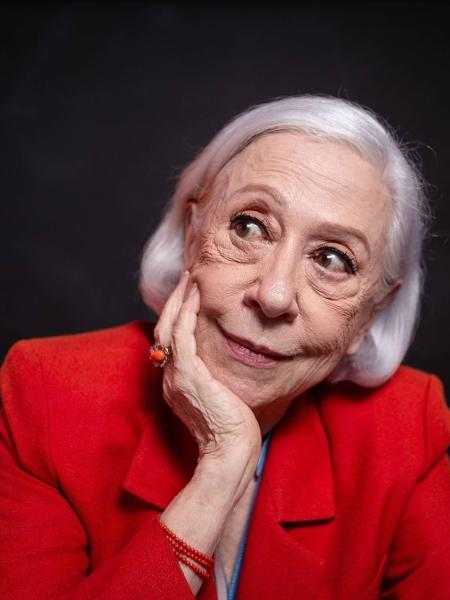

Conheça esta Mulher, Mãe, Atriz...Maravilhosa e Poderosa!
Fernanda Montenegro é atriz e considerada a grande dama do cinema e da dramaturgia do Brasil. Nascida Arlete Pinheiro da Silva em um subúrbio carioca, fazia curso de secretariado quando se inscreveu em um concurso para locutora e ganhou seu primeiro emprego, logo integrando um grupo de teatro e se tornando radioatriz. Aos 23 anos se casou com o ator Fernando Torres, com quem teve dois filhos, o diretor Claudio Torres e a atriz Fernanda Torres.
Estreou no teatro, iniciando uma bem sucedida carreira de mais de sete décadas, com trabalhos marcantes como as peças ‘As Lágrimas Amargas de Petra von Kant’, ‘Dias Felizes Virão’ e ‘Beijo no Asfalto’; os filmes ‘Eles Não Usam Black-Tie’, ‘O Auto da Compadecida’ e ‘Vida Invisíve’l; e as novelas ‘Baila Comigo’, ‘Guerra dos Sexos’, ‘O Dono do Pedaço’ e ‘Belíssima’, entre dezenas de produções. Indicada ao Oscar de Melhor Atriz por 'Central do Brasil', venceu o Emmy Internacional de Melhor Atriz por 'Doce de Mãe'.
"Se você exerce a sua vocação, metade da sua vida está resolvida." Fernanda Montenegro
Sua História
Nascida em 16 de outubro de 1929 no Rio de Janeiro, recebeu como nome de batismo Arlete Pinheiro Esteves da Silva. Filhos de imigrantes portugueses, por parte de pai, e italianos, por parte de mãe, a atriz cresceu no subúrbio do Rio, em uma família simples, que tentava se adaptar a vida na cidade grande. Seu pai era artesão, “um artista”, como diz a atriz na sua biografia publicada na Coleção Aplausos da Imprensa Oficial. Já sua mãe, como a própria atriz diz era a administradora da casa. E uma boa administradora. Uma mulher companheira e poderosa.
Com 15 anos, enquanto fazia um curso de secretariado, Arlete ouviu uma chamada para um curso de radialista na Radio do Ministério da Educação e Cultura. Ela se inscreveu e em pouco tempo Fernanda Montenegro Radio MEC passou a fazer parte do elenco de colaboradores da Rádio Teatro da Mocidade, onde apresentavam peças, biografias, adaptações de romances e contos. Assim Arlete, como ainda era conhecida começava a dar seus primeiros passos na vida artística. Na Rádio MEC, tinha um programa próprio chamado Passeio Literário, durante 10 anos. Na mesma época, também começou a escrever. Ao lado da Rádio MEC havia um grupo de teatro amador da Faculdade de Direito do Rio de Janeiro, onde Fernanda deu seus primeiros passos nos palcos, participando futuramente do Teatro Ginástico.
Em 1951, foi a primeira atriz contratada pela TV Tupi. Ainda na década de 1950, fez parte da Companhia Maria Della Costa e do Teatro Brasileiro de Comédia (TBC). Em 1959 formou sua própria companhia teatral, a Companhia dos Sete, em parceria com seu marido Fernando Torres. Dessa união nasceram dois filhos: Cláudio e Fernanda, também atriz. Em 1965, Fernanda Montenegro fez sua estréia na recém-criada TV Globo, mas alcançando grande reconhecimento nacional na teledraturgia da emissora, sobretudo, a partir dos anos 1980, construindo uma carreira sólida na TV, em novelas como Baila Comigo (1981), Guerra dos Sexos (1983), Cambalacho (1986), Sassaricando (1988), Rainha da Sucata (1990) e muitas outras. No cinema, atuou em clássicos nacionais, como Eles Não Usam Black-Tie (1981), O Que É Isso, Companheiro? (1997), O Auto da Compadecida (2000), além de O Tempo e o Vento (2013), A Vida Invisível (2019) e quase 50 outros filmes.
Dentre os inúmeros prêmios nacionais e internacionais que recebeu em seus mais de setenta anos de carreira, em 1999, foi condecorada com a Grã-Cruz da Ordem Nacional do Mérito, além de ter sido cinco vezes homenageada com o Prêmio Molière, ter recebido três vezes o Prêmio Governador do Estado de São Paulo, a atriz ganhou ainda o Urso de Prata no Festival de Berlim de 1998 pela interpretação de "Dora" no filme Central do Brasil de Walter Salles, e em 1999, o Globo de Ouro de melhor atriz em filme dramático. Recebeu também vários prêmios da crítica norte-americana, no mesmo ano. Em 2013, foi eleita a 15ª celebridade mais influente do Brasil pela revista Forbes. Durante a Cerimônia de abertura dos Jogos Olímpicos Rio 2016, Fernanda leu o poema "A flor e a náusea", de Carlos Drummond de Andrade. Em 2019, a atriz lançou sua autobiografia, pela Companhia das Letras, intitulada "Prólogo, ato, epílogo: Memórias".
